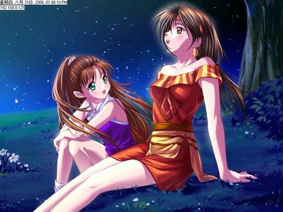
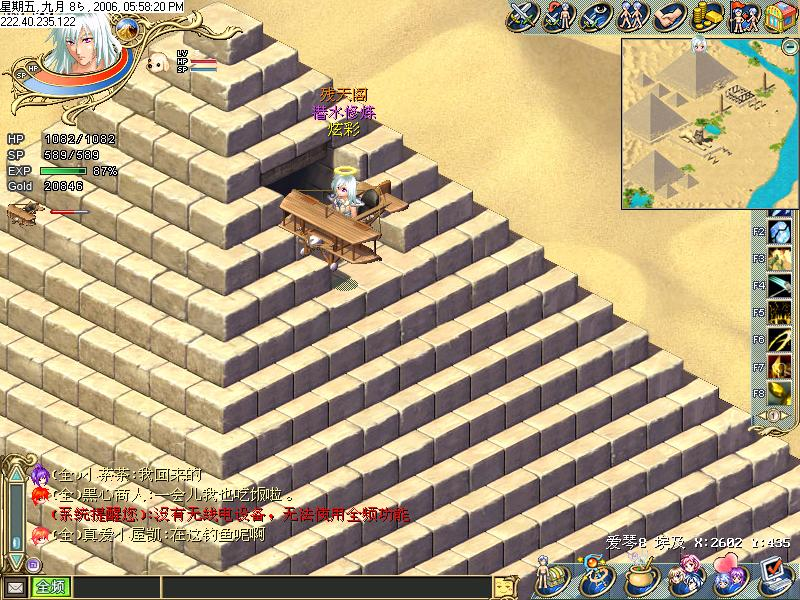
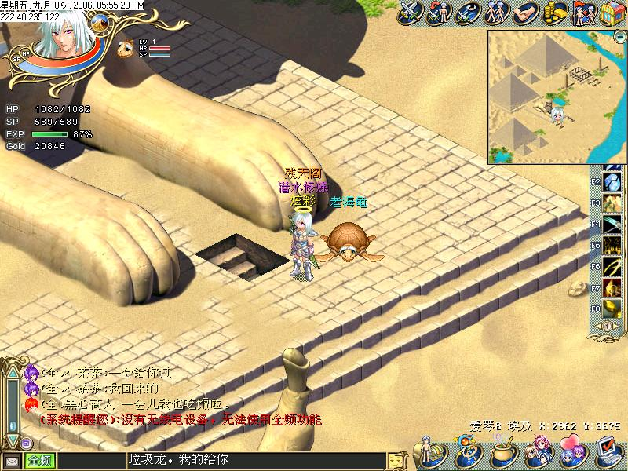
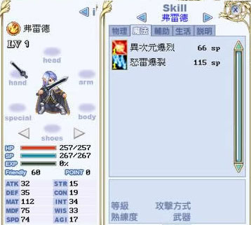
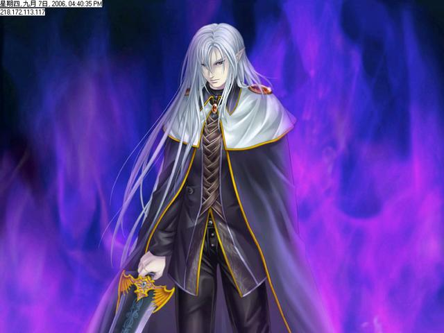

| |
作者：爱琴炫彩
前期任务~
趁还米出小弗先看看还有啥米做的~..~
妮丝相关：
1.迷样的少女(妮丝跟随)------------------------无前置任务
2.谜样少女的劫运-----------------------------------前置(谜样般的少女)
3.魔女帕蒂丝(天珠1)--------------------------------前置(谜样少女的劫运)
4.斗神的考验(天珠2)--------------------------------前置(魔女帕蒂丝)
5.光与暗的双子神(天珠3=>妮丝恢复记忆)----前置(斗神的考验)
6.巴尼亚天空之城的秘密(达烈斯的圣谕)------前置(光与��的双子神)
7.星空下的约定(星芒指标)------------------------前置(光与��的双子神)
－－－－－－－－－－－－－－－－－－－－－－－－－－－－－－－－－－－－
萝卡相关：
1.最初的试练(萝卡跟随)---------------------------无前置任务
2.传说中的佛雷德(萝卡父亲死亡)---------------前置(最初的试练)
3.萝卡的再出发--------------------------------------前置(传说中的佛雷德)
4.山洞的另一端(拉提姆契约)---------------------前置(传说中的佛雷德)
5.女神启示录-----------------------------------------无前置任务
6.死战！强敌佛雷德！(小克死亡)---------------前置(山的另一端任务，传说中的佛雷德任务，罗卡、克里夫跟随)
7.星空下的约定(星芒指标)------------------------前置(光与��的双子神)
－－－－－－－－－－－－－－－－－－－－－－－－－－－－－－－－－－－－
小克相关：
1.改邪归正的强盗(小克加入)---------------------无前置任务
2.死战！强敌佛雷德！(小克死亡)---------------前置(山的另一端任务，传说中的佛雷德任务，罗卡、克里夫跟随)
－－－－－－－－－－－－－－－－－－－－－－－－－－－－－－－－－－－－
任务道具：
1.真理之路(冥界钥匙)------------------------------无前置任务
－－－－－－－－－－－－－－－－－－－－－－－－－－－－－－－－－－－－
不确定是否该解的任务：
1.大教堂的异教徒
2.遭冤狱的罗卡
3.消失的村民-
1.天珠一 魔女帕蒂丝
流程:先去韩国在广场那有个女NPC点她後,得知有个神秘客来这里
神秘客就在女NPC的隔壁房间 切记!!要带妮丝喔
进去之前把妮丝带出战 然後再进去
说完去埃及金字塔 进去後走中间的传点
然侯在进去传点,记得要带妮丝出战!
进去後会在地图上看到问号,走过去会看到天珠
2.天珠二 斗神的考验
前置任务解:过魔女帕蒂丝
条件：身上携带天珠(打开地道用的)，队伍携带妮丝(触发天珠用的)
地点：冰山登陆点地图(传点正上方,需要搭乘飞行工具)
奖励：天珠*1，15%胶囊*1
流程：
1.一直往里面走可以看到天珠守护者及一颗天珠
2.与上面老者(土黄色衣服)对话後选择接受挑战，进入战斗
3.打4属斗神(跟青龙长的一样)
疾风斗神－LV135，HP25690，技能：有点像旋风，不过打3下
冰雪斗神－LV145，HP25690，技能：说不出像什麽，一样打3下
大地斗神－LV150，HP25690，技能：很像石灵突，一样打3下
破坏斗神－LV140，HP25690，技能：有点像剑芒，还是打3下
奖励：天珠*1，15%胶囊*1
3.天珠3 光与暗的双子神
需要解过前两颗天珠的任务
并将妮丝+天珠带在身上,才可触发地点在马雅村落内,躲避球区上方的塔顶
(需使用飞行船)
剧情:
主角在祭坛上发现天珠
想替妮丝恢复记忆
却被纳普多带领着达烈斯战士阻止
纳普多:这女孩及天珠是不祥之物,把他交给我们
主角:如果我说不呢?
纳普多:那我们只好.....
(进入第一场战斗)
第一场
纳普多+达烈斯战士(无增援)
达烈斯战士 火属107级 HP16060
达烈斯战士 地属107级 HP16560
纳普多 地属110级 HP18560
达烈斯战士 风属108级 HP15520
达烈斯战士 水属108级 HP15520
剧情:
第一场打完之後出现帕蒂丝与天珠守护者出现
帕蒂丝:将天珠放上祭坛妮丝就可以恢复记忆
天珠守护者:别这麽做,帕蒂丝只是为了唤醒妮丝的黑暗面
主角回头看看妮丝天真可爱的笑容..
回答:不管了
(将天珠放上祭坛)
黑暗妮丝出现
(进入第二场战斗)
第二场
黑暗妮丝+纳普多(无增援)
达烈斯战士 地属107级 HP16560
达烈斯战士 火属107级 HP16060
黑暗妮丝 水属150级 HP26500
达烈斯战士 风属108级 HP15520
纳普多 地属110级 HP18560
达烈斯战士 地属107级 HP16560
达烈斯战士 水属108级 HP15520
达烈斯战士 水属108级 HP15520
剧情:
第二场打完之後妮丝恢复记忆
并将黑暗妮丝封印在自己体内
意图自我毁灭,但接受了主角的劝止
得到奖励
1.妮丝好友度+10
2.10%经验胶囊
4.巴尼亚天空之城的秘密
触发人员: 妮丝
触发地点:航海大地图 座标: X:4464 Y:10360
任务步骤: 带着妮丝~把大门的封印解除会发现妮丝的双亲
再过一下对话~即将完成任务
任务大约剧情: 简单说就是 佛雷德 被冥王利用~~所以现在要去找佛雷德说请楚
任务奖励: 星星*1 达烈斯圣谕
5.星空下的约定
须待妮丝与罗卡
到大岛山洞顶楼
任务奖励:星芒指标(藉着不明力量的指引,可在黑暗中指出正确的方向)
有妮丝和罗卡CG图

需完成 第3颗天珠
一不小心把钥匙的任务忘了..补上理
6.寻找真理之路
首先 到埃及金字塔外 找考古学家触发任务
接着使用飞行道具 爬上埃及金字塔上方


里面有一颗 真理之石可以拿
补充： 拿到真理之石後 去埃及中央的人面狮身像
会开启密道
要打怪 LV120 阿努比斯 HP19520
经过一番苦战 终於看到弗雷德
居然还要打第二场....
第二场 Lv.140 阿努比斯HP22XXX
外加7只 木乃伊
木乃伊会使用 麻痹 石化 混乱 回覆 4属
奖励:5%经验胶囊 冥界钥匙
7.冥王霍尔特
触发地点：鬼岛2楼下方
触发条件：携带冥界钥匙.星芒指标
任务流程：
1.在鬼岛2楼使用冥界钥匙开启机关门
2.进入後往左下传点走
3.往传点位置走会看到牛头鬼跟半兽鬼，他说要有达烈斯的圣谕才能通过
4.达烈斯的圣谕
5.与半兽鬼对话，进入最里面
6.与弗雷德对话，进入战斗（妮丝永远离开玩家）
打5之弗雷德，不过他们对罗卡依旧...无力=.=+
弗雷德(火)--lv152..HP57500
弗雷德(地)--lv145..HP41400
弗雷德(风)--lv148..HP47500
弗雷德(水)*2--lv144..HP43600
任务奖励：妮丝死亡(双子座)，弗雷德加入，20%胶囊

 |
|